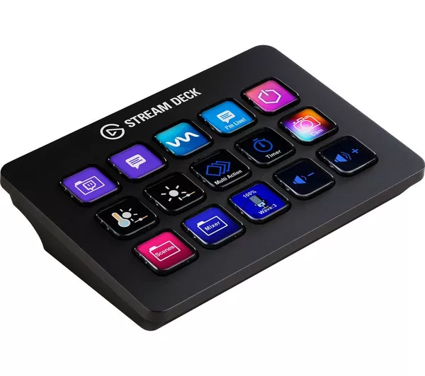
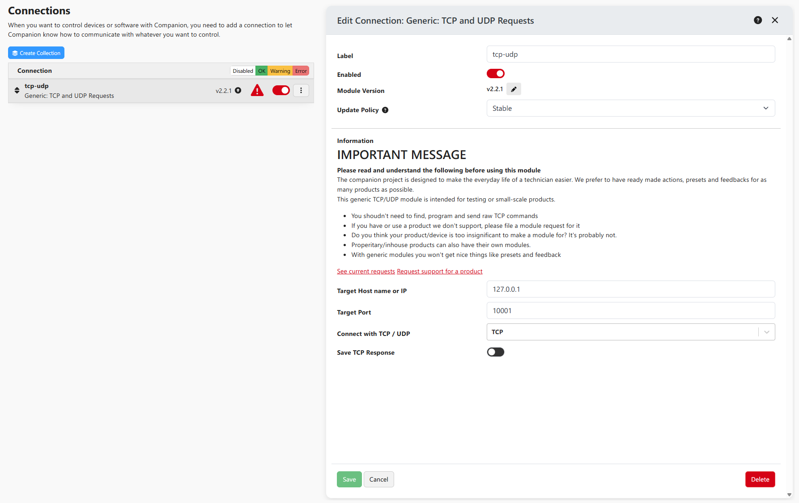
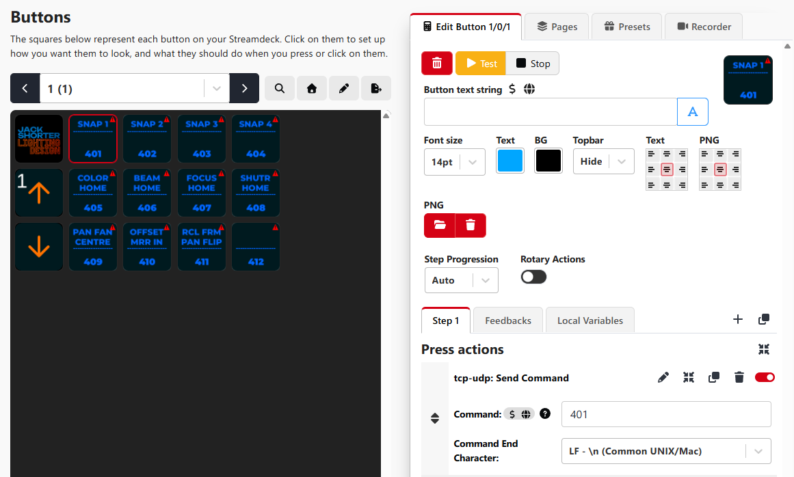
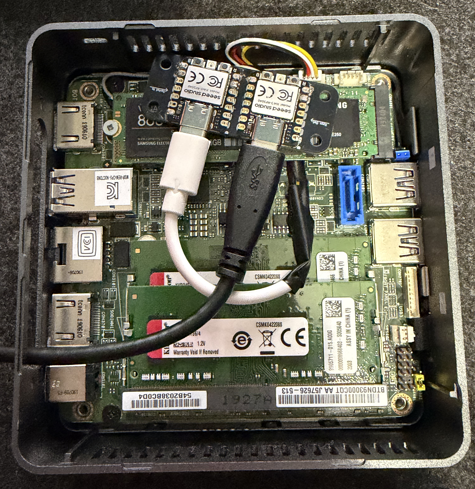
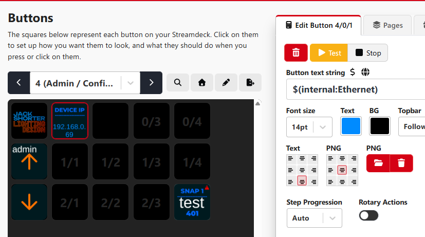
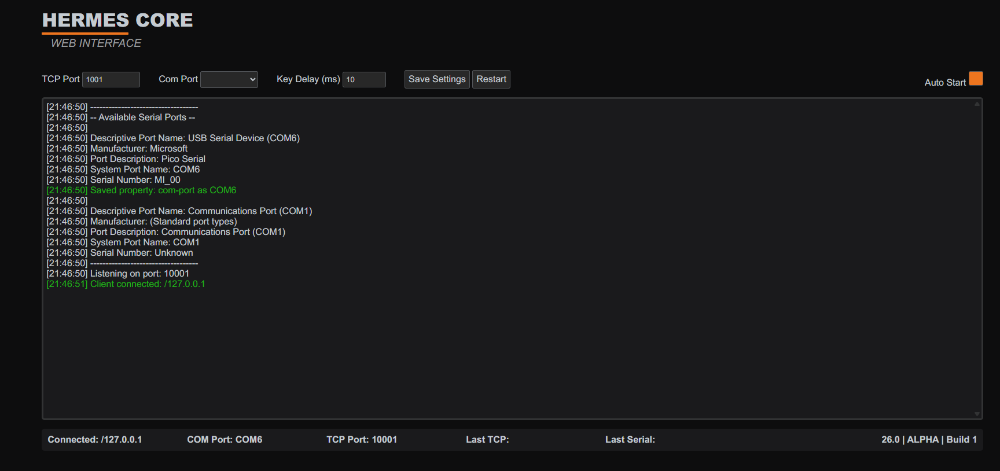

A look into how to use a Stream Deck with an EOS Console as if it were a regular USB Keyboard.
For the last few weeks I have been working on a desktop application to generate lighting related paperwork such as fixture reports, color calls, and hopefully much more! Now that the application somewhat works I wanted to dive in and talk about how and why it works.
XKeys are an incredible product, they are one of the most common third party products used by EOS programmers all over the world.
Any kind of programmable keypad can be used with EOS, but historically, XKeys have often been favoured. The reasons for this are plenty.
It’s a large product line up, software is consistent across that lineup, and the company has been around for a long while, and likely won't be going anywhere anytime soon.
Typically, each key is programmed to type a macro command e.g. “m401”. These key mappings are stored on the device itself, which is why its so great for EOS consoles.
You plug the keypad into the console and it acts as a regular USB keyboard. You press the key you assigned to type “m401” and it types “m401”. Simple, easy, great.
My frustration with a programmable keypad solution is the inherent inflexibility once the keypad has been programmed.
For example:
I have an Xkeys 24, and I’ve laid out my macros how I want them. I’ve also designed and printed off custom text images for the
keycaps to quickly identify which key is which macro. Some people even go as far to get proper custom keycaps printed.
This works for a couple shows, but then my workflow changes, or I discover a new trick and want to build some new macros.
Now, I need to remove the keypad from my setup, plug it into a pc that has the software installed to reprogram it, and then print out a new keycap image, or have a new full keycap manufactured.
This is far from the end of the world, but it's kind of annoying, and that's a good enough reason to dedicate 2 months of spare time to an alternative solution, don't you think?

Stream Decks, originally designed for the consumer market, have taken live entertainment by storm over the last decade.
It's a screen with a grid of transparent buttons placed over it. Via software, you can make the buttons do pretty much anything you could want.
They are one of the most common third party products used by sound and video departments across the globe, but what about lighting?
For Programmers specifically, there’s an interesting problem, and that’s the console itself.
A stream Deck works differently to a programmable keypad. The actions you set for the buttons on a Stream Deck are stored in the software, rather than on the hardware itself.
Herein lies the problem. On an EOS console, you cannot install third party software onto the internal computer, despite it running standard flavours of Windows IOT.
This means that the official, supported way of using a Stream Deck is immediately a non-starter for EOS programmers.
One workaround option is to utilise OSC commands. A separate pc running third party software like Bitfocus Companion,
sending OSC commands to eos to fire macros or whatever the user pleases. This system works, and it works well. Except for one fatal flaw.
Only the primary console on an EOS network can receive and respond to OSC commands.
This means if you are programming on a backup or client console, you are once again square out of luck.
An XKeys or similar macro pad works in every scenario because it is just a usb keyboard, sending regular usb key presses to the console.
So how do we make a Stream Deck do that? Read on…
I have devised a solution involving a combination of dedicated software and hardware to tackle this problem.
Let’s start at the Stream Deck, and work our way towards the console.
I'm using an old intel nuc mini PC running Bitfocus Companion.
I’ve chosen Companion as it’s significantly more powerful compared to the first party Elgato software.
The way it operates is also incredibly convenient for how the final system will work, more on this later.
Companion allows you to send data to something called a socket. At a very (very) basic level,
sockets allow multiple distinct softwares to easily communicate with one another, usually across a network.
Companion is set up so that when you press a button (e.g. Macro 401), it will send the string “m401” over the socket, on port 10001, on the localhost ip address.
This is everything you need on the companion side to get up and running and is natively supported. Now comes the custom stuff.
A Java application is running on the same pc. It’s listening to the same socket. So when Companion sends that “m401” string, the Java application receives that string milliseconds later.
It then splits the string into individual characters, and adds a new line identifier at the end. It then sends those characters to the custom hardware.
So the line of logic is this:
Stream Deck button pressed (Macro 401)
Companion sends “m401” to socket port 10001 over the localhost (127.0.0.1).
Java application receives “m401” and sends each character consecutively to the hardware.
“M” “4” “0” “1” “/N” the “/N” acts as an enter key.



The custom hardware is pretty simple, it's two rp2040s, acting as a Serial to USB Keypress converter.
The first rp2040 receives characters from the pc and sends that information straight to the second 2040 via UART. The second 2040 then types whatever was sent to it.
I’m using an old intel nuc mini pc to run Companion and the Java application.
I specifically chose a nuc that has internal usb headers. This means I can embed my custom hardware directly inside the nuc.
I’ve soldered together a custom USB C cable to connect from the internal header to the rp2040 pcb.
When you power on the nuc, everything configures itself to get up and running in less than a minute.
The Stream Deck is placed wherever you want and plugged into the nuc pc. The output of the converter hardware is then connected to the EOS Console.
As far as EOS is aware, you’ve simply plugged in a USB keyboard. This is all the setup you need.
Once the system is set up and configured, customisation is still a breeze. Connect the nuc to a network or directly to another pc and you can access the Companion UI through a web browser.
The ip address of the nuc is automatically identified and displayed on the admin page of the Stream Deck.
So if the ip of the nuc is 192.168.0.1, then you type “192.168.0.1:8000” into a web browser and have the full Companion UI.
There's no need to disconnect or open up anything at all.
I’ve made custom button images in photoshop to display the Macro name and its number, but there's also no reason you couldn’t use the built in text functions to display the same information.
The java application also has a web UI, available on port 8001. It shows a terminal style view with logs of what it's doing.
You can also see information like the selected TCP and Com Ports, along with the delay in milliseconds between keypresses.
And that's it! Press the button, and the macro is typed into EOS.


An inevitable drawback of the pageable approach when using a Stream Deck is the increased time from navigating to a macro that isn't on the page you’re currently displaying.
I feel this is the biggest trade off, but also think the benefits of pages outweigh the cons. Technically, there's no limit to the amount of pages you can have.
Besides, if you really need to see more macros at once, you can always get a second, (or third), Stream Deck, the same way people have multiple programmable keypads.
Companion natively supports multiple Stream Decks with independent surfaces, so you could customize the quantity and size of Stream Decks to your hearts content.
This system isn't just restricted to macros either. It makes sense for that to be the primary use case, but there's nothing stopping you from making a button type any combination of keypresses you could think of.
This system could be as if not more useful than the dedicated OLED target keys on APEX class hardware, though admittedly with a lot more setup required. Hell of a lot cheaper though!
I think the ultimate version of this hardware is a gadget II sized raspberry pi based computer, with the serial to keypress converter built in.
I’ve gone the route of an old mini pc for now due to its simpler nature and significantly cheaper cost due to the current AI ram crisis.
I’m really happy with how this project has turned out, and think it's still early days for the concept.
I’d love to build a proper hardware solution, such as a custom Raspberry Pi Compute Module board, in the future.
Software development is also going to continue.
I hope to soon get to a state where I can release the code and hardware design under an open source license
for anyone that wants to build a system of their own. Stay tuned!
{kind=link}
{kind=link}
{kind=link}
{kind=link}
{kind=link}